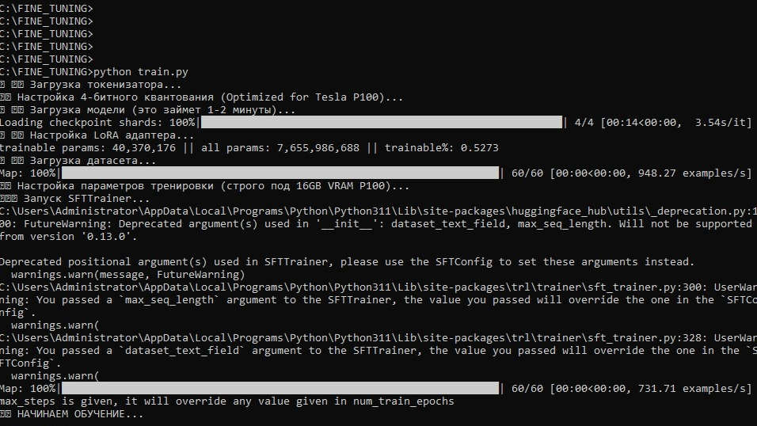
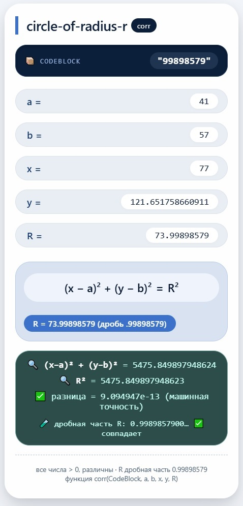

AI Prompts Development
AI Prompts Examples
AI prompts examples.AI prompts are a great way to speed up programming, document management, data analysis, and strategy development tenfold. Dialogues with AI already allow you to formulate effective plans, strategies, and AI queries. You can see many interesting prompts here. All prompts are fine-tuned to achieve maximum results.
Important notes::
All published materials are unsourced and were used solely for research purposes.
The prompts given here may be effective on some AIs and less effective on other AIs.
All materials are provided "as is."
Some materials in local languages require translation.
(c) by Valery Shmelev (Oflameron) https://oflameron.com MIT License
AI Prompt Based Technology
LoRA JSON
JSON Qwen - JSON examples for fine-tuning.
JSON Qwen 12 >>
JSON Qwen 14 >>
JSON Data 21 >>
JSON Data 41 >>
JSON Data 42 >>
JSON Data 43 >>
JSON Data 44 >>
JSON Data 44-1 >>
JSON Data 44-2 >>
Google DOC 43 >>
LoRA handmade JSON Data
QLoRA AI Training (fine-tuning) - An effective fine-tuning method for large language models (LLM) that compresses neural network base weights to 4 bits while maintaining high response quality. This technology enables the adaptation of gigantic AI models (for example, with 70 billion parameters) to specific tasks on a single commercially available graphics card.

{kind=link}
{kind=link}
{kind=link}
QLoRA Training
Mathematical coding 1
AI Prompt - We use the Math formula for calculating the distance from a point to a given line to encode the text. The entire text is converted to ASCII codes and divided into blocks of 8 digits. Each block is encoded with its own mathematical function. To do this, the AI prompt generates JavaScript code that selects the parameters of the mathematical function so that the result of calculating the distance from a point to a line contains the required block of digits. The function parameters will be part of the encrypted text.
The function is designed for a text programming language Oflameron.
See Prompt >>
Screenshot >>
Oflameron Language >>
{kind=link}
Mathematical coding 2
AI Prompt - we use the Math formula for calculating polar coordinates of a line to a given line to encode the text. The entire text is converted to ASCII codes and divided into blocks of 8 digits. Each block is encoded with its own mathematical function. To do this, the AI prompt generates JavaScript code that selects the parameters of the mathematical function so that the result of calculating the distance from a point to a line contains the required block of digits. The function parameters will be part of the encrypted text.
The function is designed for a text programming language Oflameron.
See Prompt >>
Screenshot >>
{kind=link}
Mathematical coding 3
AI Prompt - we use the sibsloca function to calculate segments intersected by a line on a coordinate system. Various function parameters can be used for encoding.
The function is designed for a text programming language Oflameron.
See Prompt >>
Screenshot >>
Mathematical coding 4
AI Prompt - we use a mathematical function that calculates the parameters of a circle in a coordinate system to encrypt a block of eight digits. The function's parameters uniquely encode the given block of digits.
The function is designed for a text programming language Oflameron.
See Prompt >>

Processing >>Mathematical coding 5
AI Prompt - We use a mathematical function - the classic ellipse equation - to encode a block of eight digits. The equation's parameters and the knowledge that an ellipse equation was used allow us to uniquely reconstruct the text. Ideally, each mathematical function should encode one character.
The function is designed for a text programming language Oflameron.
See Prompt >>
Processing >>
Mathematical coding 6
AI Prompt - We use the canonical hyperbolic equation to encrypt a block of eight digits. The function was developed for the esoteric text programming language Oflameron. The AI prompt can easily be rewritten to encrypt a single character of text (if maximum encryption is required).
The function is designed for a text programming language Oflameron.
See Prompt >>
Processing >>
Mathematical coding 7
AI Prompt - We'll use the canonical equation of a parabola to encode 8 characters (digits). We'll use the AI to select the equation parameters such that the fractional part of one of the variables is exactly equal to the text sequence being encoded. To increase the security of the code, we can encode one character of each mathematical function instead of 8. This example of mathematical encoding is for the Oflameron 2.00 programming language..
See Prompt >>
Telegram >>
Processing >>
Mathematical coding 8
AI Prompt - We'll use a second-order linear equation to encrypt 8 characters (digits). We'll adjust the parameters so that one of the selected variables has a fractional part that exactly matches the sequence of digits being encrypted. To increase the security of the code, we can encode one character of each mathematical function instead of 8. This example of mathematical encoding is for the Oflameron 2.00 programming language.
See Prompt >>
Telegram >>
ScreenShot >>
Processing >>
Mathematical coding 9
AI Prompt - A code implementation for another mathematical formula used to encrypt a block of eight digits. Significantly stronger encryption can be achieved by encrypting each digit of the plaintext with a separate mathematical formula (instead of a block of eight digits).
See Prompt >>
ScreenShot >>
{kind=link}
Mathematical coding 10
AI Prompt - Another mathematical formula for encrypting text. Ideally, each digit (ASII code) should be encrypted with a separate mathematical formula. Moreover, the formula used and its parameters are known only to the sender and recipient.
See Prompt >>
Telegram >>
ScreenShot >>
Processing >>
{kind=link}
Screenplay AI Project
AI Prompt - Let's try creating an open-ended script outline or story for a science fiction film script with AI. The script should be as "scientific" as possible. This script presents a captivating science fiction hypothesis that elegantly connects biological evolution and technological progress. The script outline is open—anyone can add to it, improve it, and use it based on the MIT License.
"Mission Oflameron" AI prompt based scenario
AI Prompt >>
Google Processing >>
Mission Oflameron >>
Tumlook Scenario >>
Tumbex Scenario >>
Tumgik Scenario >>
Episode xxxxx343 >>
Episode xxxxx344 >>
Episode xxxxxx21 >>
Episode xxxxxx22 >>
Episode xxxxxx23 >>
Episode xxxxxx24 >>
Episode xxxxxx25 >>
Episode xxxxxx28 >>
Episode xxxxxx29 >>
Episode xxxxxx30 >>
Episode xxxxxx32 >>
SCENARIO5.1 >>
SCENARIO5.2 >>
SCENARIO5.3 >>
SCENARIO5.4 >>
SCENARIO5.5 >>
How to write to me
AI request - AI Prompt - Write JavaScript code for a web page (optimized for viewing on a smartphone) in which, using the document.write() method and a set of arithmetic functions (addition and subtraction of character codes in UTF-8), form the text of a postal address and display it on the web page.
See script.txt >>
Sony Pictures »
Developer support »
Shared Links »
Head Hunter »
Projects
AI Technologies
Notes: - AI-powered technologies.
Developing the Esoteric Programming Language Oflameron only with AI Prompts (MIT License). Early version https://proposed-gray-cattle.myfilebase.com/ipfs/QmXMVBgdZez4VfeKpoKKfSJ3j1oVfTHztmnvC2oYNSoz3x
The Oflameron programming language is being developed as a set of several AI prompts: a language interpreter, a "pseudo-compiler," and a library of additional functions. Oflameron supports encryption and obfuscation of text (and, to some extent, steganography). The highly secure XOR algorithm is used for cryptographic protection. In the AI prompt, the user specifies the "compiler" or code interpretation parameters and receives a "one-time" program (e.g., in JavaScript) that generates encrypted text or decrypts it. The one-time nature of compilers and interpreters makes cryptanalysis as difficult as possible while simultaneously saving the Oflameron user considerable time and effort. Using AI prompts makes it easy to create custom versions of the language, add new functions, and generate code for JavaScript, C++, Visual Basic for Application, Python, and other languages. Simply specify the required language in the AI prompt. You can encode the source code of one language as a program in another language and then compile it. For example, create a JavaScript, encode it as a C++ program, and compile it in Visual Studio.
To develop new versions of the Oflameron text programming language, we need support (crowdsourcing or donation). The email address is listed in the relevant section of this website in Javascript format.
Developer support https://proposed-gray-cattle.myfilebase.com/ipfs/QmTb4AqMaWxpPMaGgpVfzMbTaxwdKTAujXRUFoYCikgQvW
The word Oflameron is an artificially created word © by Valery Shmelev (Deutsche: Valery Shmeleff) 1994
Details » Mission Oflameron » IMG » SV »
Developing the Esoteric Programming Language Oflameron only with AI Prompts (MIT License). Early version https://proposed-gray-cattle.myfilebase.com/ipfs/QmXMVBgdZez4VfeKpoKKfSJ3j1oVfTHztmnvC2oYNSoz3x
The Oflameron programming language is being developed as a set of several AI prompts: a language interpreter, a "pseudo-compiler," and a library of additional functions. Oflameron supports encryption and obfuscation of text (and, to some extent, steganography). The highly secure XOR algorithm is used for cryptographic protection. In the AI prompt, the user specifies the "compiler" or code interpretation parameters and receives a "one-time" program (e.g., in JavaScript) that generates encrypted text or decrypts it. The one-time nature of compilers and interpreters makes cryptanalysis as difficult as possible while simultaneously saving the Oflameron user considerable time and effort. Using AI prompts makes it easy to create custom versions of the language, add new functions, and generate code for JavaScript, C++, Visual Basic for Application, Python, and other languages. Simply specify the required language in the AI prompt. You can encode the source code of one language as a program in another language and then compile it. For example, create a JavaScript, encode it as a C++ program, and compile it in Visual Studio.
To develop new versions of the Oflameron text programming language, we need support (crowdsourcing or donation). The email address is listed in the relevant section of this website in Javascript format.
Developer support https://proposed-gray-cattle.myfilebase.com/ipfs/QmTb4AqMaWxpPMaGgpVfzMbTaxwdKTAujXRUFoYCikgQvW
The word Oflameron is an artificially created word © by Valery Shmelev (Deutsche: Valery Shmeleff) 1994
Details » Mission Oflameron » IMG » SV »
27.05.2026